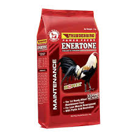

| ⚡ ENERTONE POULTRY FEEDS ⚡ |
|  |
ENERTONE 💰 Price: ₱42 per kilo 📌 Description: ENERTONE is a specially formulated poultry feed that improves energy, growth, and overall health of your chickens. Ideal for daily feeding to boost performance and vitality. ✅ Key Benefits: - Promotes healthy growth and weight - Boosts energy and endurance - Supports strong immunity - Improves feather quality - Perfect for everyday feeding 🐔 Best For: Broilers, native chickens, and laying hens 🕒 Feeding Guide: Feed daily with clean water. Use recommended portions based on age and size of your chickens. |